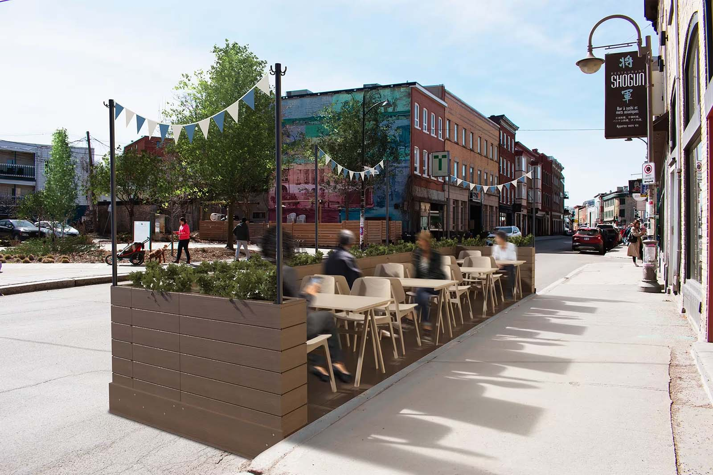
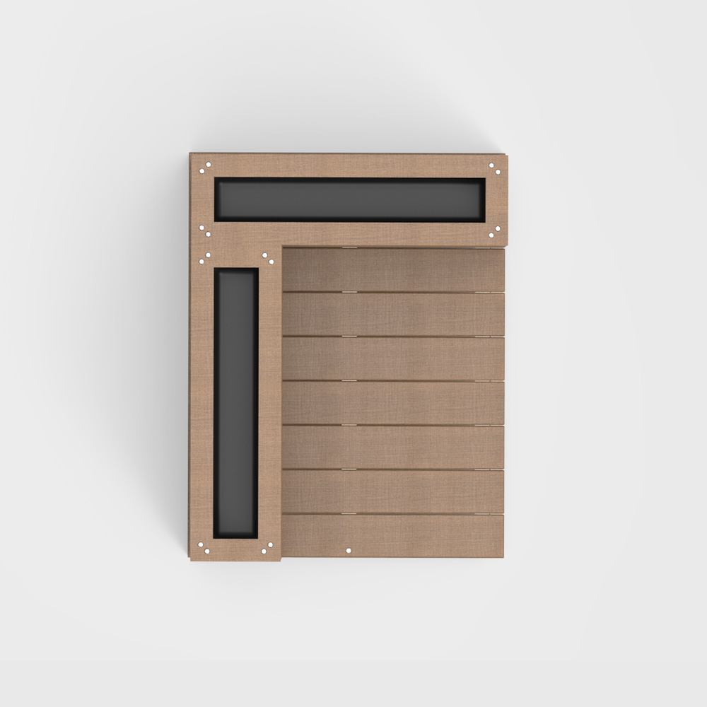
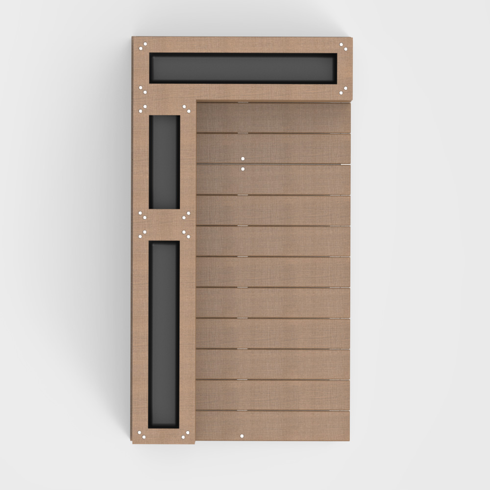

Pour en arriver à ce concept, la gestion d’un café-terrasse temporaire a dû être divisée en 5 phases, soit la planification, l’installation, l’utilisation, la désinstallation et l’entreposage. Sur ces 5 phases, le produit-service StockDeck fournit l’expertise et le matériel selon les besoins du restaurateur. StockDeck se présente comme une solution sans prise de tête axée sur l'expérience utilisateur.




Dans un monde idéal, où ce projet se manifeste réelement, un siteweb serait créé pour les restaurateurs. Ceux-ci pourraient prévisualiser des cafés-terrasses, commander les composantes, et obtenir des plans préapprouvés par la ville qui entamerait le processus beaurocratique.